その他のアーム(England)
詳細がほとんど不明のメーカーや掲載対象機種が少ないブランドがある。機種数の少ないもので、ブランドの詳細が不明なものはここで扱う。このページではトーンアーム関連のみ出したブランドを扱う。
TRANSCRIPTORS (トランスクリプター)
イギリスのアナログプレイヤーなどのブランド。1970年代半ば頃にユニークな設計のアームが輸入されていた。当時の代理店は原田産業及びオーデックスジャパン。2000年代になり復活したようだ。
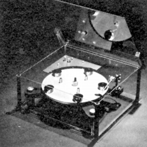
(このブランドのアナログプレイヤー Skeleton)
Vestigal
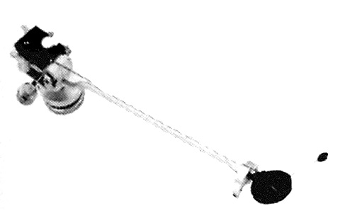
■価格 39,800円
■型式 スタテックバンランス型
■全長
■実行長 222�o
■オーバー・ハング
■トラッキングエラー 2.5゜（最大）
■針圧範囲
■アーム高さ
■アームベース穴
■アンチスケートディバイス あり
■アームリフター
■ラテラルバランサー
■カートリッジ自重
■線間容量 34pF
■発売 1974〜75年頃
■販売終了 1978〜79年頃
■備考 価格は1975年頃のもの
アーム全体は水平にのみ動作し、垂直方向はシェル部分が動作。
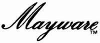
MAYWARE (メイウェアー)
イギリスのアームのブランド。1970年代後半〜80年代後アームが輸入されていた。当時の代理店はシノイ通商。詳細不明。
Formula4-MK�V
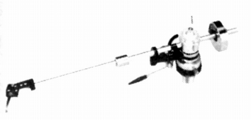
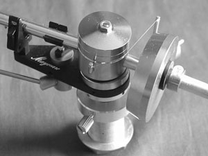
■価格 25,800円
■型式 スタテックバンランス・ワンポイントサポート・オイルダンプ型
■全長 296�o
■実行長 229�o
■オーバー・ハング 23.4�o
■トラッキングエラー ±1.5゜
■針圧範囲 0.7〜3.0g(0.1gステップ）
■アーム高さ調整 20〜50�o
■アームベース穴
■アンチスケートディバイス あり
■アームリフター あり
■ラテラルバランサー
■カートリッジ自重 5〜10g
■線間容量
■発売 1978年10月
■販売終了 1987年
■備考 価格は1978年頃のもの
1985年頃は32,000円
専用ヘッドシェルは、付属のレンチで取り外し可能。スペアシェルあり。
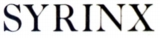
SYRIX (シリンクス)
イギリスのアームのブランド。1980年代初頭にアームが輸入されていた。当時の代理店はファンガテイ。詳細不明。
PU-2
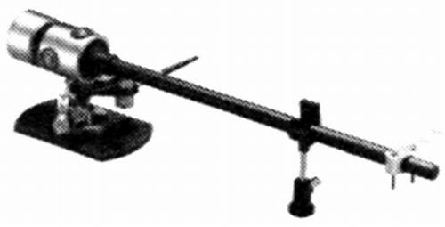
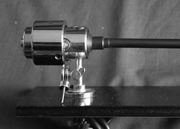
■価格 120,000円
■型式 スタテックバンランス型
■全長
■実行長 228�o
■オーバー・ハング
■トラッキングエラー
■針圧範囲
■アーム高さ調整
■アームベース穴
■アンチスケートディバイス
■アームリフター あり
■ラテラルバランサー
■カートリッジ自重 4.5〜6g
■線間容量
■発売 1981年
■販売終了 1985年頃
■備考 価格は1981年頃のもの
ヘッドシェル固定型。ローコンプライアンスカートリッジ用マスリング付。
ZETA (ゼタ)
イギリスのアームのブランド。やはり1980年代初頭にアームが輸入されていた。当時の代理店はインターソニックス。詳細不明。
Zeta
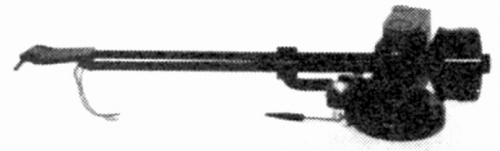
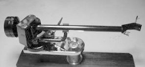
■価格 235,000円
■型式 スタテックバンランス型
■全長 285�o
■実行長 225�o
■オーバー・ハング 18�o（調整可能）
■トラッキングエラー
■針圧範囲 0〜3g
■アーム高さ調整 可能
■アームベース穴 31�o
■アンチスケートディバイス あり
■アームリフター あり
■ラテラルバランサー
■カートリッジ自重 2〜15g
■線間容量
■発売 1983年
■販売終了 1988年頃
■備考 価格は1983年頃のもの
HELIUS DESIGNS (ヒリアスデザインズ)
イギリスのアームのブランド。1982年創立のメーカー。1980年代半ばにアームが輸入されていた。当時の代理店はインターソニックス。現在も存続してアームの販売を続けているようだ。
Orion
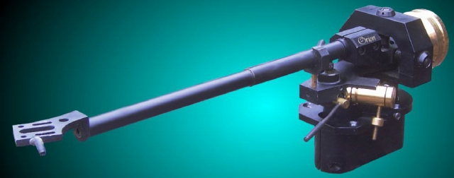
■価格 250,000円
■型式 スタテックバンランス型
■全長 315�o
■実行長 251�o
■オーバー・ハング 16.4�o（調整可能）
■トラッキングエラー
■針圧範囲 0〜3g
■アーム高さ調整 可能
■アームベース穴 31�o
■アンチスケートディバイス あり
■アームリフター あり
■ラテラルバランサー
■カートリッジ自重 4〜20g
■線間容量
■発売 1984年
■販売終了 1988年頃
■備考 価格は1984年頃のもの
内部配線及び出力コードに純銀線、
3ボールベアリング方式採用
なお、この会社のサイトによれば、Orionには1〜4まであるようだ。ここで紹介するのは「1」。
HEYBROOK(ヘイブロック)
イギリスのオーディオブランド。スピーカーやアナログディスクプレーヤーなどもあったようだ。1980年代後半にアームが輸入されていた。当時の代理店はグリフォン・エレクトロニクス。
High Perfomance
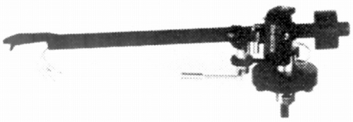
■価格 99,000円
■型式 スタテックバンランス型
■全長 285�o
■実行長 229�o
■オーバー・ハング 18�o
■トラッキングエラー
■針圧範囲 0〜2.75g
■アーム高さ調整
■アームベース穴 30�o
■アンチスケートディバイス あり
■アームリフター あり
■ラテラルバランサー
■カートリッジ自重 3〜8g、8〜13、13〜20g(中型/大型ウェイト使用時）
■線間容量
■発売 1987年10月
■販売終了 1991〜92年頃
■備考 価格は1987年頃のもの
バンデンフル銀製コード採用、
ヘッドシェル固定型、マグネシウムパイプ採用。
NOTTINGHAM ANALOGUE STUDIO(ノッテンガム・アナログ・スタジオ)
1970年設立のイギリスの小規模なアナログ・オーディオブランド。1990年代後半にプレイヤーの他、アームが輸入されていた。代理店は�潟Nラブマン＆サンズ。
Space Arm
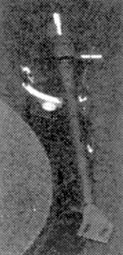
■価格 180,000円
■型式 スタテックバンランス型
■全長
■実行長
■オーバー・ハング
■トラッキングエラー
■針圧範囲
■アーム高さ調整
■アームベース穴
■アンチスケートディバイス あり
■アームリフター
■ラテラルバランサー
■カートリッジ自重 8〜25g
■線間容量
■発売 1997年10月
■販売終了 年頃
■備考 価格は1997年頃のもの
Foot
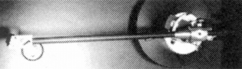
■価格 450,000円
■型式 スタテックバンランス型
■全長
■実行長
■オーバー・ハング
■トラッキングエラー
■針圧範囲
■アーム高さ調整
■アームベース穴
■アンチスケートディバイス あり
■アームリフター
■ラテラルバランサー
■カートリッジ自重 6〜25g
■線間容量
■発売 1998年9月
■販売終了 年頃
■備考 価格は1998年頃のもの
年間12台の限定生産モデル。
サイトマップへ